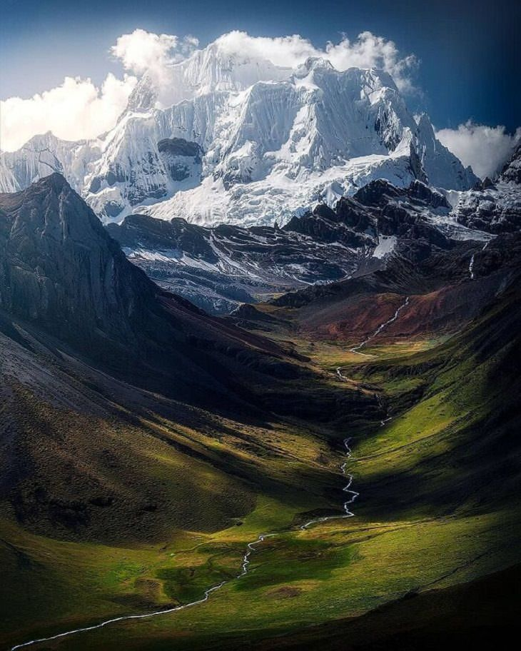
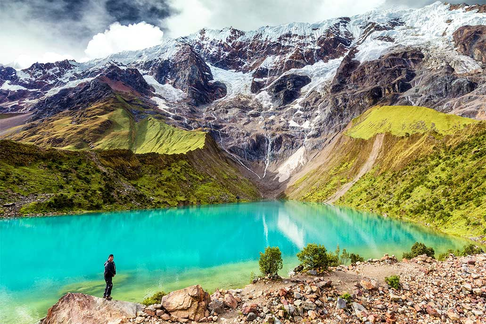
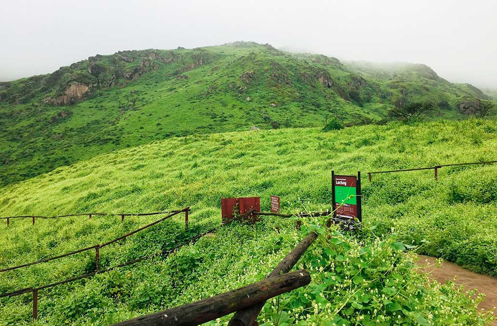
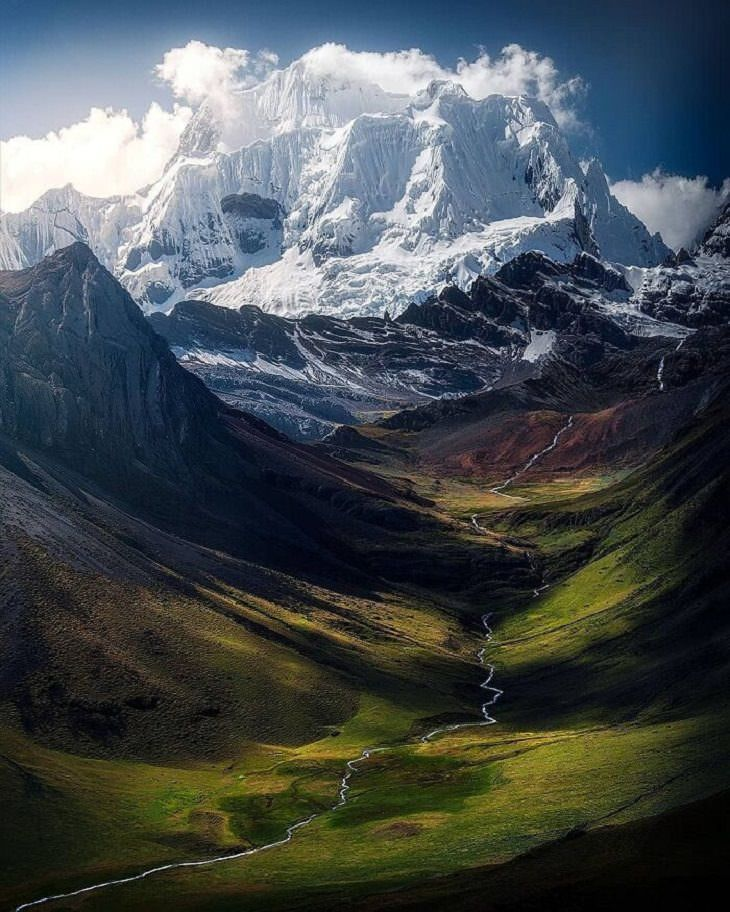
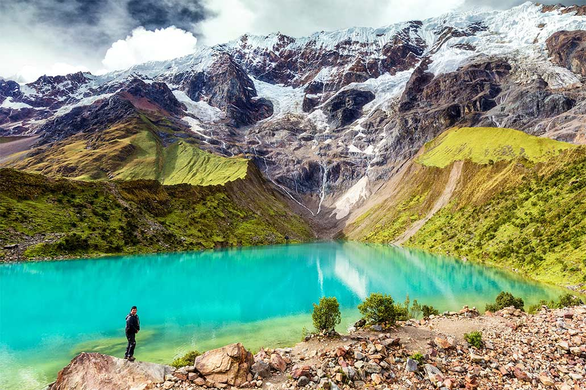
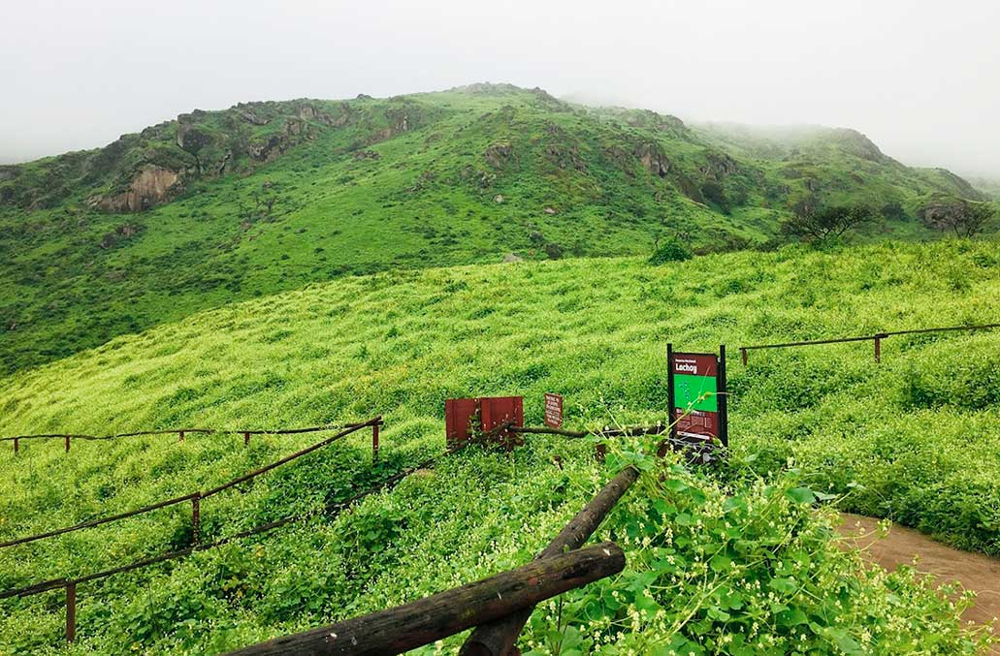
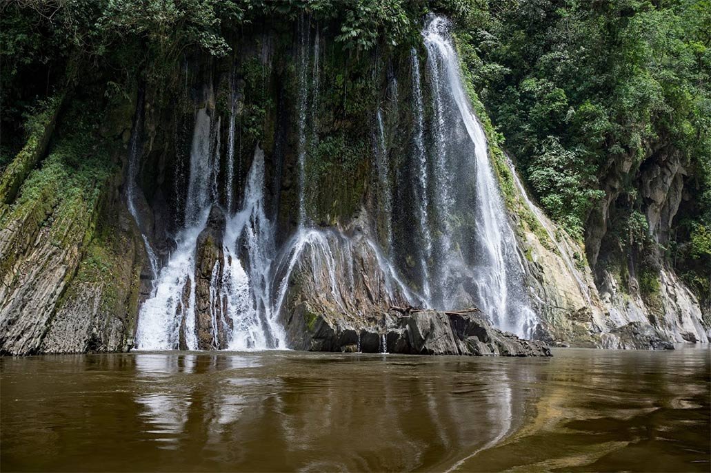
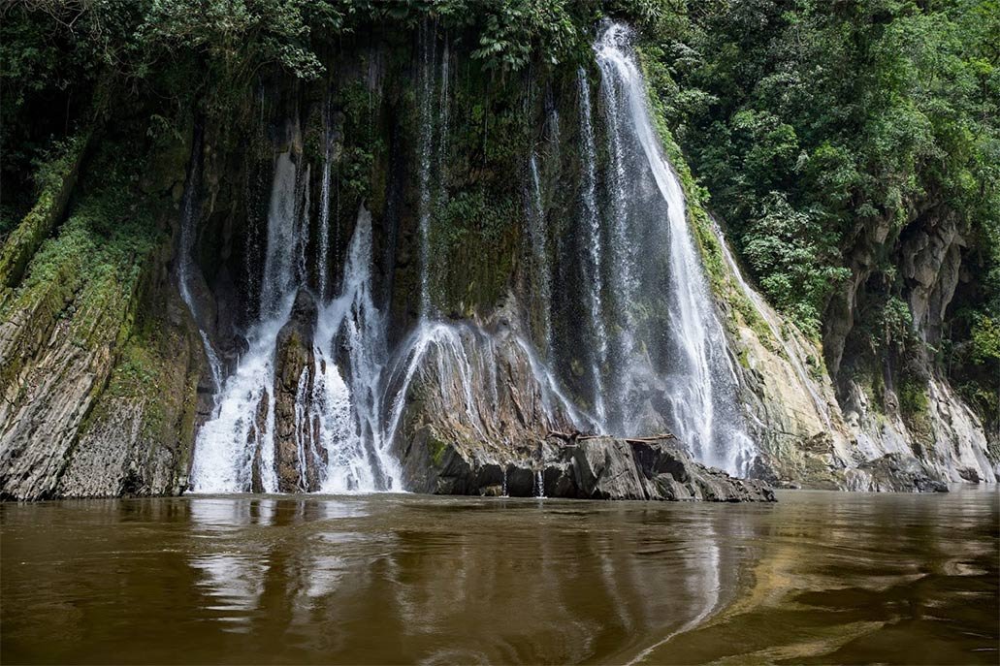
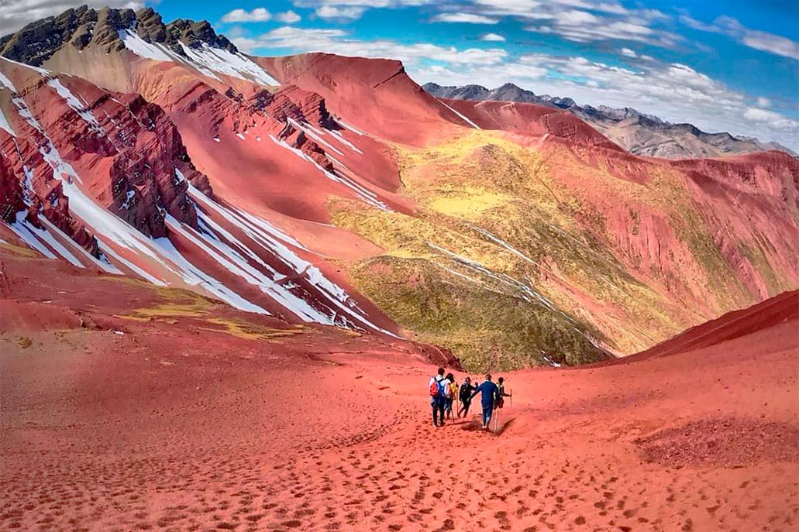
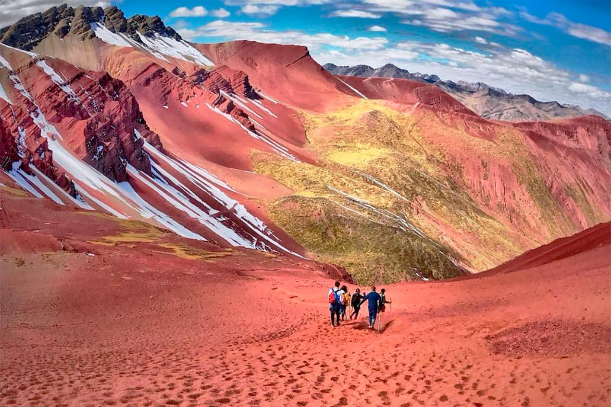

| PRÓCERES Y PRECURSORES |
El camino hacia la libertad del Perú fue forjado por dos tipos de protagonistas históricos: los
precursores, que con rebeliones y escritos despertaron el anhelo independentista desde las
sombras de la
opresión, y los próceres, quienes lideraron batallas decisivas y proclamaciones que convirtieron
ese
sueño en realidad. Los primeros sembraron la semilla de la insurrección con actos de valentía y
pensamiento crítico; los segundos cosecharon la independencia con estrategia y convicción.
Juntos,
representan las dos caras de una misma lucha: la resistencia que desafió al sistema y la acción
que lo
derribó. Su legado, tejido entre ideales y sacrificio, sigue siendo el cimiento de la identidad
nacional.
| GRUPO |
PERIODO |
| Precursores |
1742-1815 |
| Próceres |
1810-1824 |
PRECURSORES
| PRECURSORES |
Fueron rebeldes que desafiaron el sistema colonial, pensadores que difundieron
nuevas ideas y mártires que ofrendaron sus vidas por la causa de la libertad. Aunque
sus esfuerzos no lograron romper inmediatamente las cadenas del dominio español,
mantuvieron viva la llama de la resistencia y sembraron en el pueblo el anhelo de
emancipación. Su lucha silenciosa pero persistente fue la base sobre la que luego se
construiría la independencia del Perú.
| TÚPAC AMARU |
Nacimiento: 19 marzo 1738 (Surimana, Cuzco)
Muerte: 18 mayo 1781 (Ejecutado en Cuzco)
Logros:
- Lideró la mayor rebelión indígena del Virreinato
- Unió criollos, mestizos e indígenas contra el sistema colonial
- Inspiró futuros movimientos independentistas en toda América

| MICAELA BASTIDAS PUYUCAHUA |
Nacimiento: 23 junio 1744 (Tamburco, Abancay)
Muerte: 18 mayo 1781 (Ejecutada junto a su esposo Túpac Amaru II)
Logros:
- Organizó la logística y redes de comunicación de la rebelión de 1780
- Gobernó territorios liberados durante la revuelta
- Primer símbolo femenino de la resistencia anticolonial

| HIPÓLITO UNANUE |
Nacimiento: 13 agosto 1755 (Arica, entonces Perú)
Muerte: 15 julio 1833 (Lima)
Logros:
- Fundó el colegio de medicina San Fernando
- Promovió reformas ilustradas en educación y ciencia
- Ministro del primer gobierno peruano

| MARIANO MELGAR |
Nacimiento: 10 agosto 1790 (Arequipa)
Muerte: 12 marzo 1815 (Ejecutado en Umachiri, Puno)
Logros:
- Creó la poesía patriótica con sus "yaravíes revolucionarios"
- Participó activamente en la rebelión de Pumacahua (1814)

| JOSÉ DE LA RIVA-AGÜERO |
Nacimiento: 3 mayo 1783 (Lima)
Muerte: 21 mayo 1858 (Lima)
Logros:
- Primer presidente del Perú (1823)
- Conspiró contra el virreinato desde 1810

PRÓCERES
| PRÓCERES |
Fueron los líderes que con acciones concretas llevaron al Perú hacia su libertad.
Con valentía y visión estratégica, dirigieron los ejércitos patriotas, libraron las
batallas definitivas y proclamaron solemnemente la independencia de la nación. Estos
héroes no solo combatieron en el campo de batalla, sino que también trabajaron en la
sombra, tejiendo redes de apoyo y manteniendo viva la llama de la resistencia
incluso en los momentos más difíciles. Su legado trasciende el triunfo militar, pues
sentaron los principios fundamentales de la patria libre y soberana que hoy
conocemos.
| JOSÉ DE SAN MARTÍN |
Nacimiento: 25 febrero 1778 (Yapeyú, Argentina)
Muerte: 17 agosto 1850 (Boulogne-sur-Mer, Francia)
Logros:
- Proclamó la independencia del Perú (28 julio 1821)
- Creó la primera bandera y el primer himno nacional
- Abolió la esclavitud en territorios liberados
| SIMÓN BOLÍVAR |
Nacimiento: 24 julio 1783 (Caracas, Venezuela)
Muerte: 17 diciembre 1830 (Santa Marta, Colombia)
Logros:
- Selló la independencia con las victorias de Junín y Ayacucho
- Implementó reformas políticas en el Perú independiente

| JOSÉ DE LA MAR |
Nacimiento: 12 mayo 1778 (Cuenca, Ecuador)
Muerte: 11 octubre 1830 (San José, Costa Rica)
Logros:
- Héroe clave en las batallas de Junín y Ayacucho
- Promulgó la primera constitución liberal (1827)

| MARÍA PARADO DE BELLIDO |
Nacimiento: 5 de julio 1777
Muerte: 1 de mayo 1822
Logros:
- Envió mensajes cifrados a las tropas patriotas
- Primer símbolo femenino de coraje en la independencia

| JOSÉ OLAYA BALANDRA |
Nacimiento: 27 de marzo 1782
Muerte: 29 de junio 1823
Logros:
- Mártir que mantuvo comunicación clandestina con patriotas durante la
ocupación
realista


 







 

 
